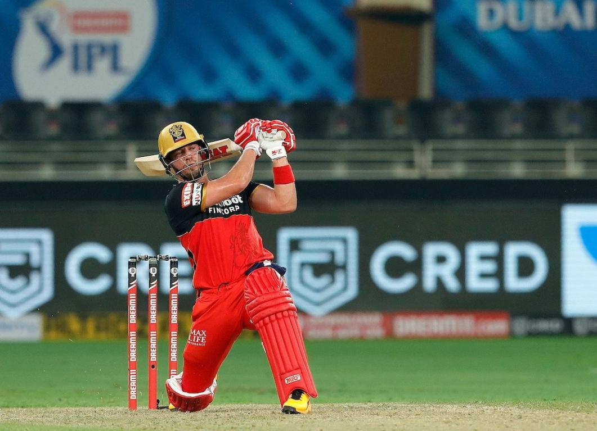

Abhram Benjamin Devillers

Tap this for more info
Abraham Benjamin de Villiers (born 17 February 1984) is a former South African international cricketer. AB de Villiers was named as the ICC ODI Player of the Year three times during his 15-year international career and was one of the five Wisden cricketers of the decade at the end of 2019. He is regarded as one of the greatest cricketers in the history of the sport and the best batsman of his era. AB de Villiers began his international career as a wicket-keeper-batsman, but he has played most often solely as a batsman. He batted at various positions in the batting order, but predominantly in the middle-order. Regarded as one of the most innovative and destructive batsmen in the modern era, as well as one of the greatest of all time, de Villiers is known for a range of unorthodox shots, particularly behind the wicket-keeper. He made his international debut in a Test match against England in 2004 and first played a One Day International (ODI) in early 2005. His debut in Twenty20 International cricket came in 2006. He scored over 8,000 runs in both Test and ODI cricket and is one of the very few batsmen to have a batting average of over fifty in both forms of the game. In limited overs cricket, he is an attacking player. He holds the record for the fastest ODI century in just 31 balls.
Date of Birth |
Birthplace |
Nationality |
Nickname |
Height |
Batting Style |
Bowling Style |
17th February 1984 |
Pretoria, South Africa |
South African |
Alien, ABD, Superman |
1.78m |
Right-handed |
Right arm medium |
Fatest ODI century
22 Test centuries
25 ODI centuries
Fastest 150 runs in ODI